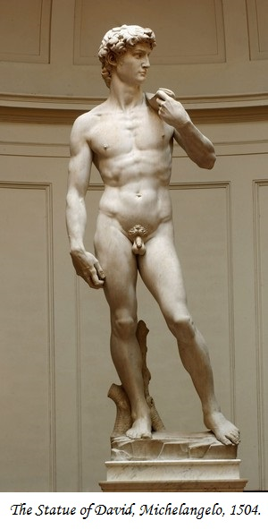
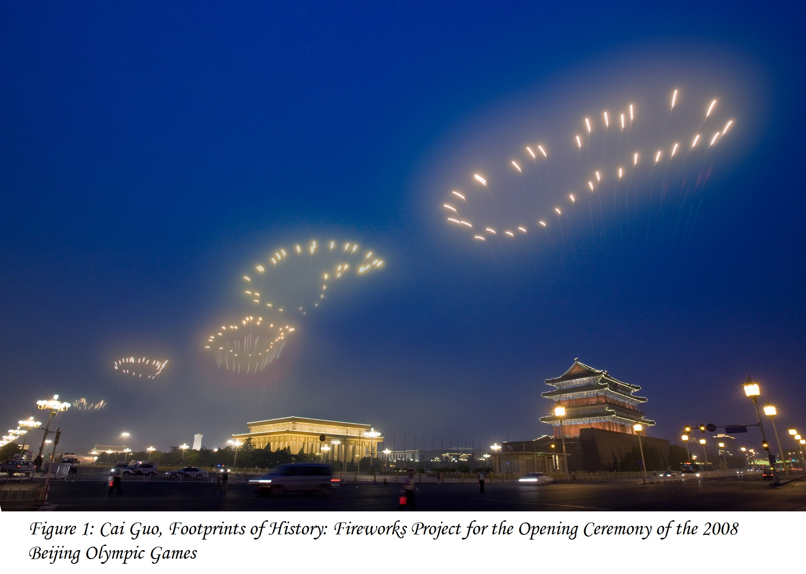
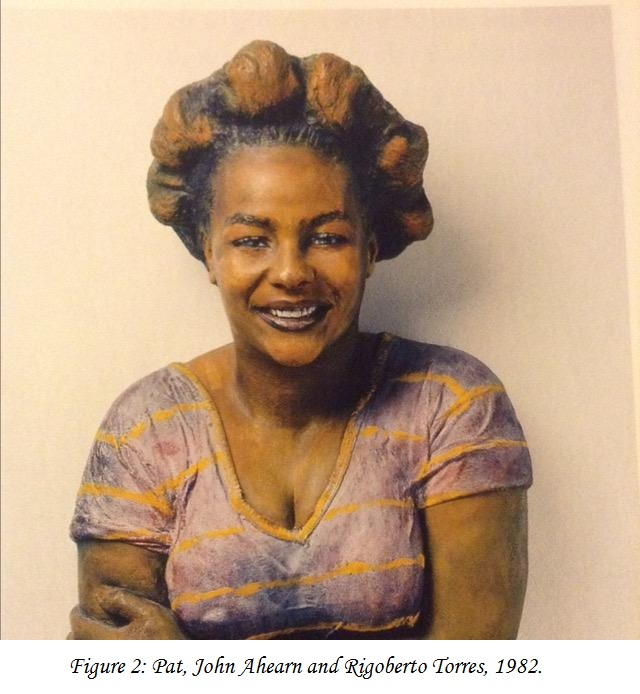
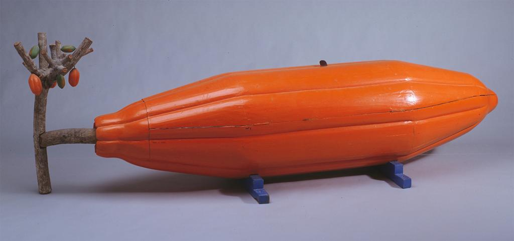
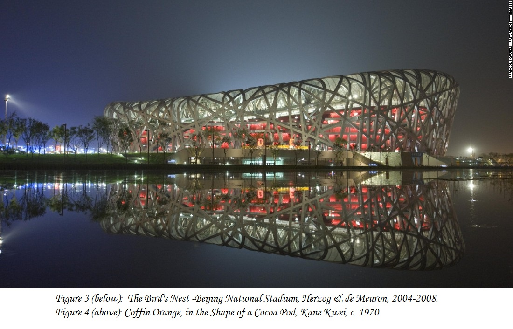

The World as Artists See it
If the work of Cai Guo-Qiang (See figure 1) and Zhang Hongtu demonstrates how people understand and value the same work of art in different ways, similarly, different artists, responding to their world in different times and places, might see the world in apparently divergent terms. They do, however, share the fundamental desire to create. All people are creative, but not all people possess the energy, ingenuity, and courage of conviction that are required to make art. In order to produce a work of art, the artist must be able to respond to the unexpected, the chance occurrences or results that are part of the creative process. In other words, the artist must be something of an explorer and inventor. The artist must always be open to new ways of seeing. The landscape painter John Constable spoke of this openness as “the art of seeing nature.” This art of seeing leads to imagining, which leads in turn to making. Creativity is the sum of this process, from seeing to imagining to making. In the process of making a work of art, the artist also engages in a self-critical process—questioning assumptions, revising and rethinking choices and decisions, exploring new directions and possibilities. In other words, the artist is also a critical thinker, and the creative process is, at least in part, an exercise in critical thinking. Exploring the creative process is the focus of this book. We hope you take from this book the knowledge that the kind of creative and critical thinking engaged in by artists is fundamental to every discipline. This same path leads to discovery in science, breakthroughs in engineering, and new research in the social sciences. We can all learn from studying the creative process itself.
- Artists help us to see the world in new or innovative ways.
- Artists make a visual record of the people, places, and events of their time and place.
- Artists make functional objects and structures (buildings) more pleasurable and elevate them or imbue them with meaning.
This is one of the primary roles that Cai Guo-Qiang a ssumes in creating works like Project to Extend the Great Wall of China by 10,000 Meters. In fact, almost all of his work is designed to transform our experience of the world, jar us out of our complacency, and create new ways for us to see and think about the world around us. The work of Japanese artist Yayoi Kusama has much the same effect. Kusama is widely known for her fascination with polka-dots. In the late 1950s, she began to produce paintings that she called “Infinity Nets,” huge canvases painted all over in tiny circles. The paintings were a means of coming to grips with an obsessive hallucinatory vision that she first experienced as a child: “One day I was looking at the red flower patterns of the tablecloth on a table, and when I looked up I saw the same pattern covering the ceiling, the windows and the walls, and finally all over the room, my body and the universe. I felt as if I had begun to self-obliterate, to revolve in the infinity of endless time and the absoluteness of space, and be reduced to nothingness.”
Sometimes artists are not so much interested in s eeing things anew as they are in simply recording, accurately, what it is that they see. The sculpture of Pat (Fig. 1-6) almost looks as if it were alive, and certainly anyone meeting the real “Pat” would recognize her from this sculpture. In fact, Pat is one of many plaster casts made from life by John Ahearn and Rigoberto Torres, residents of the South Bronx in New York City. In 1980, Ahearn moved to the South Bronx and began to work in collaboration with local resident Torres. Torres had learned the art of plaster casting from his uncle, who had cast plaster statues for churches and cemeteries.
It is, perhaps, somewhat surprising to recognize that the sculpture of a cocoa pod by African artist Kane Kwei (Fig. 1-10) is actually a coffin. Trained as a carpenter, Kwei first made a decorative coffin for a dying uncle, who asked him to produce one in the shape of a boat. In Ghana, coffins possess a ritual significance, celebrating a successful life, and Kwei’s coffins delighted the community. Soon he was making fish and whale coffins for fishermen, hens with chicks for women with large families, Mercedes-Benz coffins for the wealthy, and cash crops for farmers, such as the 8 1/2-foot cocoa bean coffin illustrated here. In 1974, an enterprising San Francisco art dealer brought examples of Kwei’s work to the United States, and today the artist’s large workshop makes coffins for both funerals and the art market. Today, Kwei’s workshop is headed by his grandson, Anang Cedi, and a video of Cedi’s work can be viewed on myartslab.
 Vision is the art of seeing what is invisible to others.